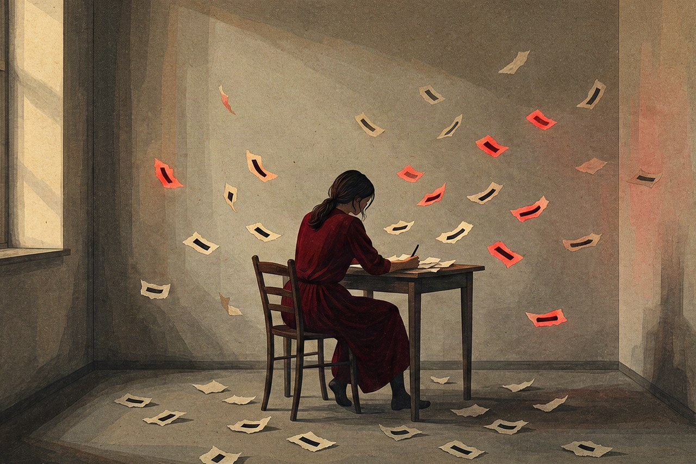

Crítica · O conto da aia · 03/11/2026
Quando contar a própria história se torna uma forma de resistência
Em O conto da aia, de Margaret Atwood, memória e linguagem são o que Gilead não consegue confiscar: narrar a própria vida vira o último território de resistência.

Ilustração da redação.
Publicado em 1985, O Conto da Aia, de Margaret Atwood, continua sendo uma daquelas obras que parecem pertencer simultaneamente ao passado e ao presente. Ambientado na República de Gilead, um regime teocrático que transforma o controle dos corpos em política de Estado, o romance acompanha Offred, uma mulher que perdeu o direito de decidir sobre a própria vida e passou a existir principalmente em função de sua capacidade reprodutiva. No entanto, reduzir o livro a uma distopia sobre a opressão feminina seria ignorar justamente aquilo que o torna tão perturbador: Atwood não está interessada apenas em mostrar como uma sociedade pode controlar seus indivíduos, mas em investigar o que permanece quando quase tudo é retirado de uma pessoa.
A resposta encontrada pelo romance está na memória e na linguagem.
Offred narra sua experiência a partir de um presente no qual sua identidade foi praticamente apagada. Ela não possui mais seu antigo nome, não pode circular livremente, não pode ler e tem pouco controle sobre o próprio corpo. Ainda assim, existe uma parte de sua vida que Gilead não consegue controlar completamente: aquilo que ela lembra. Suas memórias surgem de maneira fragmentada, interrompendo o presente e trazendo de volta pessoas, lugares e experiências de uma vida anterior ao regime.
Essa estrutura fragmentada é uma das escolhas mais interessantes de Atwood. A história não é contada de maneira linear porque a memória de Offred também não funciona de maneira linear. O passado aparece quando alguma experiência do presente o provoca, como se lembrar fosse uma maneira de escapar temporariamente do espaço em que ela está presa. O leitor, assim, não recebe simplesmente a história de uma mulher vivendo sob uma ditadura; recebe os pedaços de uma identidade que está tentando sobreviver.
E talvez seja justamente aí que esteja uma das maiores forças do romance.
Em Gilead, controlar a linguagem significa controlar também as possibilidades de pensamento. As mulheres são impedidas de ler e escrever, e até mesmo seus nomes são transformados. Offred não é realmente um nome: é uma identificação que indica sua relação com o homem a quem ela foi designada. Sua identidade passa a ser definida pela posição que ocupa dentro de uma estrutura social.
Essa escolha não é apenas simbólica. Ela revela uma das ideias centrais do livro: o poder não precisa controlar somente aquilo que fazemos; ele também pode tentar determinar quem somos.
Por isso, a insistência de Offred em narrar sua própria experiência possui uma importância que ultrapassa o simples ato de contar uma história. Quando ela lembra, descreve e reorganiza acontecimentos, está tentando recuperar alguma autoridade sobre a própria vida. Gilead pode controlar seu corpo, mas não consegue determinar completamente a maneira como ela interpreta aquilo que viveu.
A linguagem, então, transforma-se em uma espécie de território de resistência.
Essa resistência aparece também em uma das expressões mais marcantes do romance: “Nolite te bastardes carborundorum” (ATWOOD, 1985). A frase, que Offred encontra como uma espécie de mensagem deixada por sua antecessora, funciona como um vestígio de uma voz feminina que o regime não conseguiu apagar completamente. Mesmo sem compreender inicialmente seu significado, Offred atribui à frase um valor afetivo e passa a carregá-la consigo. A linguagem, nesse caso, não serve apenas para comunicar: ela preserva a existência de alguém que veio antes e estabelece uma continuidade entre mulheres submetidas ao mesmo sistema.
Offred não é uma protagonista tradicionalmente heroica. Ela não lidera uma revolução, não possui um plano elaborado para derrubar Gilead e muitas vezes age pensando apenas em sua própria sobrevivência. Essa característica pode causar estranhamento para leitores acostumados a narrativas em que a resistência aparece de maneira grandiosa. Atwood escolhe outro caminho: sua personagem resiste principalmente tentando continuar sendo uma pessoa em um sistema que deseja transformá-la em função.
Essa escolha torna a narrativa mais humana e, justamente por isso, mais desconfortável. Sobreviver também significa fazer concessões. Offred sente medo, hesita, deseja, lembra, erra e, em determinados momentos, permanece em silêncio. Sua resistência não é perfeita porque ela própria não é uma personagem construída para representar a perfeição. Ela é uma mulher tentando encontrar algum espaço de autonomia dentro de uma estrutura que praticamente eliminou suas possibilidades de escolha.
O corpo é outro território fundamental dessa disputa. Em Gilead, a reprodução deixa de ser uma experiência individual e passa a ser administrada pelo Estado. O corpo feminino é transformado em recurso político. A fertilidade determina a posição social das Aias e justifica sua submissão.
Atwood constrói essa realidade sem precisar transformar a narrativa em um discurso político direto. A violência do sistema aparece justamente na normalização de práticas que, dentro de Gilead, são apresentadas como necessárias, religiosas ou moralmente justificáveis. O regime não sobrevive apenas porque impõe regras; ele sobrevive porque constrói uma narrativa capaz de fazer essas regras parecerem legítimas.
É nesse ponto que a religião assume uma função particularmente importante no romance. Gilead utiliza referências bíblicas para justificar sua organização social, mostrando como discursos religiosos podem ser reinterpretados e instrumentalizados por estruturas de poder. A crítica de Atwood, portanto, não se limita à religião em si, mas alcança a apropriação política da fé como mecanismo de legitimação.
Outro aspecto fundamental é a própria construção da distopia. Gilead não parece assustadora porque é completamente desconhecida. Pelo contrário: ela assusta porque é construída a partir de elementos reconhecíveis. O regime não surge de um mundo completamente imaginário, mas da radicalização de discursos, comportamentos e estruturas que já existem.
Essa é uma das razões pelas quais o livro permanece tão inquietante décadas depois de sua publicação. Atwood não precisa convencer o leitor de que Gilead poderia existir exatamente daquela maneira. O que ela faz é mostrar como direitos aparentemente permanentes podem ser retirados quando determinadas estruturas de poder passam a controlar as instituições, os corpos e a linguagem.
Uma leitura contemporânea também precisa reconhecer os limites do romance. A experiência de opressão apresentada por Atwood é principalmente construída a partir da perspectiva de uma mulher branca de determinada classe social. Embora o livro seja frequentemente tratado como uma representação ampla da experiência feminina, diferentes formas de desigualdade não recebem necessariamente o mesmo espaço ou profundidade.
Reconhecer essa limitação não diminui a importância da obra. Pelo contrário, permite uma leitura mais crítica. Um romance não precisa ser perfeito para ser relevante, e O Conto da Aia permanece particularmente interessante justamente porque continua produzindo perguntas que ultrapassam aquilo que a autora pretendia responder.
Uma dessas perguntas diz respeito ao que permanece de uma pessoa quando uma sociedade decide quem ela pode ser. Offred não possui uma resposta definitiva. O próprio formato de sua narrativa é cheio de lacunas, dúvidas e contradições. Ela não conta sua história como quem possui controle absoluto sobre o passado; conta como alguém que está tentando reconstruí-lo.
É nesse ato de reconstrução que sua voz sobrevive. O Conto da Aia é mais do que uma distopia sobre um futuro autoritário. É um romance sobre memória, identidade e linguagem, mas principalmente sobre a disputa pelo direito de contar a própria história. Gilead tenta transformar mulheres em corpos, funções e nomes impostos. Offred responde com aquilo que ainda possui: sua capacidade de lembrar e narrar.
No fim, o gesto de resistência de Offred é narrar. Ela lembra, reconstrói e transforma sua experiência em voz. Gilead tenta reduzi-la a um corpo e a uma função, mas sua narrativa recupera aquilo que o regime procura apagar: sua subjetividade. Continuar contando a própria história é, portanto, continuar existindo como sujeito. Quando um sistema inteiro trabalha para transformar uma pessoa em silêncio, dizer “eu” deixa de ser apenas uma afirmação de identidade e se torna um ato de resistência.
Referência Bibliográfica.
ATWOOD, Margaret. The Handmaid’s Tale. Toronto: McClelland and Stewart, 1985.